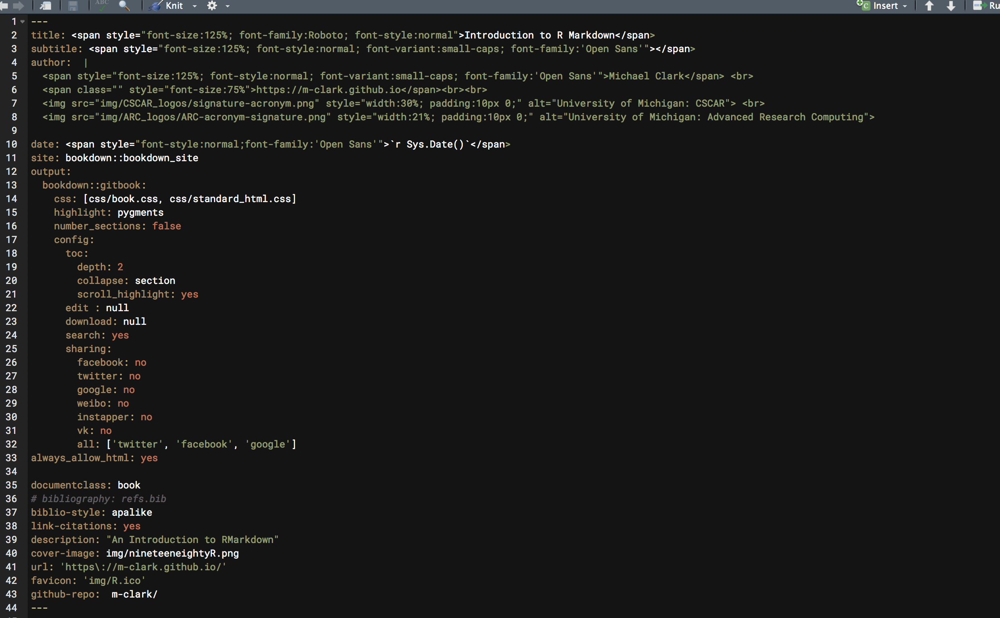

Introduction
R Markdown is a flavor of Markdown, a markup language. Markdown can be converted to other formats like HTML, but is as easy to use as normal text editing. R Markdown allows one to combine normal R code with text to produce a wide variety of document formats. This allows for a continuous transition from initial data import and processing to a finished product, whether journal article, slide presentation, or even a website.
Goals
The goal is for you to be able to get started with your own document, and understand the possibilities available to you. You will get a feel for the basic mechanics at play, as well as have ideas on how to customize the result to your own tastes. You should also understand it well enough to use it for your next paper/project/whatever.
Prerequisites
The only prerequisite is a basic understanding of R. The code in the document won’t be dwelt upon or really explained, as what the code is doesn’t matter in this context.
Note the following color coding used in this document:
- emphasis
- package
- function
- object/class
- link
Concepts
To use R Markdown effectively, it helps to know why you’d even want to. Let’s talk about some ideas, all of which are related, and which will give you some sense of the goals of effective document generation, and why this approach is superior to others you might try.
Some terminology you might have come across:
- Reproducible research
- Replicable science
- Reproducible data analysis
- Dynamic data analysis
- Dynamic report generation
- Literate programming
Each of these may mean slightly different things depending on the context and background of the person using them, so one should take care to note precisely what is meant. We’ll examine a couple of these concepts, or at least my particular version of them.
How to read this chapter
While you are looking at this section, collapse the menu (the button next to the magnifying glass), and snap the document to one side of your screen. Now open this version of it, or save it to your computer and open it in RStudio so you can get the syntax highlighting. Then snap it to the other side of the screen. See the R Markdown used to create this section will get you well on your way to understanding how to use R Markdown.
Literate Programming
Literate programming, or in the context of research, literate statistical programming, is actually an old idea at this point.
I believe that the time is ripe for significantly better documentation of programs, and that we can best achieve this by considering programs to be works of literature.
~ Donald Knuth (1984)
You might wonder why, given that such an idea was around even before MS Word, how the latter took over in most, but certainly not all, disciplines in academia, especially given that MS Word was only very recently remotely viable as a means for scientific communication, and many would say still isn’t. The interweaving of code and text is something you already do in normal scripting. Comments in code are not only useful, they are practically required. But in a program script, almost all the emphasis is on the code. With literate programming, we focus on the text, and the code exists to help facilitate our ability to tell a (data-driven) story.
In the early days, the idea was largely to communicate the idea of the computer program itself. Now, at least in the context we’ll be discussing, our usage of literate programming is to generate results that tell the story in a completely human-oriented fashion, possibly without any reference to the code at all. However, the document, in whatever format, does not exist independently of the code, and cannot be generated without it.
Consider the following example. This code, which is clearly delimited from the text via background and font style, shows how to do an unordered list in markdown using two different methods. Either a - or a * will denote a list item.
- item 1
- item 2
* item 3
* item 4So, we have a statement explaining the code, followed by the code itself. We actually don’t need a code comment, because the text explains the code in everyday language. This is a simple example but gets at the essence of the approach. In the document you’re reading right now, there is a delineation for the code itself, but this isn’t visible. However, it’s clear what the code part is and what the text part is.
The following table shows the results of a regression analysis.
| Estimate | Std. Error | t value | Pr(>|t|) | |
|---|---|---|---|---|
| (Intercept) | 37.28 | 1.878 | 19.86 | 0 |
| wt | -5.344 | 0.559 | -9.559 | 0 |
| Observations | Residual Std. Error | \(R^2\) | Adjusted \(R^2\) |
|---|---|---|---|
| 32 | 3.046 | 0.7528 | 0.7446 |
So, imagine a paper in which the previous text content explains the results while the analysis code resides right where the text is. You didn’t see the code, but you saw some nicely formatted results. I personally didn’t format anything however, those are using default settings. Here is the underlying code.
Here we see the code, but it isn’t evaluated, because the goal of the text here is not the result but to understand the code. Nothing is copied and pasted, and the code and text both reside in the same document.
The idea of literate programming, i.e. creating human-understandable programs, can extend beyond reports or slides that you might put together for an analysis, and in fact be used for any setting in which you have to write code at all.
Replicability & reproducible research
The ideas of replicability and reproducible research are hot topics in various disciplines of late. To begin, neither is precisely defined, and depending on the definition one selects, possibly unlikely or even impossible. They are more ideals to strive for, or goals for certain aspects of the research process. For example, nothing is exactly replicable, if only because time will have passed, and with it some things will have changed about the process, the people involved, the data collection approach, the analytical tools, etc., since the initial research was conducted. However, we can replicate some things, possibly even exactly, and thus make the results reproducible.
Our focus will be on the data analysis side. Let’s start with the following scenario. Various versions of a data set are used leading up to analysis, and after several iterations, finaldata7 is now spread across the computers of the faculty advisor, two graduate students and one undergrad. Two of those finaldata7 data sets, specifically named finaldata7a and finaldata7b, are slightly different from the other two and each other. The undergraduate, who helped with the processing of finaldata2 through finaldata6, has graduated and no longer resides in the same state, nor likely cares any more about the project. Some of the data processing was done with menus in a software package that shall not be named.
The script that did the final analysis, called model.Results.C, calls the data using a directory location which no longer exists (and refers only to finaldata7). It does several more data processing steps, but has no comments that would indicate why any of them are being done. Some of the variables are named things like PDQ and V3, but there is no document that would say what those mean.
When writing their research document in Microsoft Word, all the values from the analyses were copied and pasted into the tables and text1. The variable names in the document have no exact match to any of the names in any of the data objects. Furthermore, no reference was provided in the text regarding what software or specific packages were used for the analysis.
And now, several months later, after the final draft of the document was written, sent to the journal, and the reviewers have made their comments on the paper, it’s time to dive back into the analysis. Now, what do you think the odds are that this research group could even reproduce the values reported in the main analysis of the paper?
Sadly, up until a couple years ago this was not uncommon, and even certain issues just described are still very common. Such an approach is essentially the antithesis of replicability and reproducible research. Anything that was only done with menus cannot be replicated, and without sufficient documentation it’s not clear what was done even when there is potentially reproducible code. The naming of files, variables and other objects was done poorly, so it will take unnecessary effort to figure out what was done, to what, and when. And even after most things get squared away, there is still a chance the numbers won’t match what was in the paper anyway.
While certain tools like Box, Dropbox, Google drive etc. have perhaps helped somewhat, people generally don’t use them for version control, and they are not geared toward academic research specifically. However, using proper naming procedures, the approach of literate programming, and utilizing proper documentation could go a long way even with those tools.
In summary, truly reproducible data analysis requires:
- Data
- Code
- Clear documentation (of data and code)
- Version control
- Standard means of distribution
- Literate programming practices
As an example, one could start their research as an RStudio project using Git for version control, write their research products using R Markdown, set seeds for random variables, and use packrat to keep the packages used in analysis specific to the project. Doing so would make it essentially impossible not to reproduce the previous results at any stage.
Dynamic data analysis & report generation
Sometimes the goal is to create an expression of the analysis that is not only to be disseminated to a particular audience, but one which possibly will change over time, as the data itself evolves temporally. In this dynamic setting, the document must be able to handle changes with minimal effort.
I can tell you from firsthand experience that R Markdown can allow one to automatically create custom reports for different audiences on a regular basis without even touching the data for explicit processing, nor the reports after the templates are created, even as the data continues to come in over time. Furthermore, any academic effort that would fall under the heading of science is applicable here.
The notion of science as software development is something you should get used to. Print has had its day, but is not really viable for scientific advancement as it should take place. Waiting months for feedback or a year to get a paper published after it’s first sent for review is unacceptable. Furthermore, what if more data comes in? A data or modeling bug is found? Other studies shed additional light on the conclusions? In this day and age, are we supposed to just continue to cite a work that may no longer be applicable while waiting another year or so for updates?
Consider arxiv.org. Researchers will put papers there before they are published in journals, ostensibly to provide an openly available, if not necessarily 100% complete, work. Others put working drafts or just use it as a place to float some ideas out there. It is a serious outlet however, and a good chunk of the articles I read in the stats world can be found there.
Look closely at this particular entry. As I write this there have been 5 versions of it, and one has access to any of them. The number of versions in that sentence, 5, is not typed. It is based on R code that scraped the arXiv website and processed the submission history. If something changes, there is no reason not to have a version 6 or however many one wants. In a similar vein, many of my own documents on machine learning, Bayesian analysis, generalized additive models, etc. have been regularly updated for several years now.
Research is never complete. Data can be augmented, analyses tweaked, visualizations improved. Will the products of your own efforts adapt?
Why you should switch from your current approach
The main problem for other avenues you might use, like MS Word and \(\LaTeX\), is that they were created for printed documents. In modern times, not only is printing unnecessary (and environmentally problematic), contorting a document to the confines of print potentially distorts or hinders the meaning an author wishes to convey, as well as restricting the means with which they can convey it. In addition, we don’t primarily read print documents anymore. Even avid print readers must admit they see much more text on a screen than they do on a page on a typical day.
Let’s recap the issues with traditional approaches:
- Possibly not usable for reproducible scholarly research
- Syntax gets in the way of fluid text
- Designed for print
- Wasteful if printed
- Often very difficult to get figures/tables to look as desired
Some journals still charge extra for color plots. First, there obviously is no cost for color for electronic documents, which is how the vast majority of research articles are accessed. They often don’t ask whether you actually want it printed in color (they’ll simply want to charge you for any color plots you have), nor do they seem to care that you can use color schemes that would look fine in black and white. This situation is ridiculous. The case for using a markdown approach is now years old and well established. Unfortunately many, but not all, journals are still print-oriented, because their income depends on the assumption of print, not to mention a closed-source, broken, and un-scientific system of review and publication that dates back to the 17th century. Consider the fact that you could blog about your research while conducting it, present preliminary results via R Markdown (because your blog itself is done via R Markdown), get regular feedback from peers along the way via your site’s comment system, and all this before you’d ever send it off to a journal. Now ask yourself what a print-oriented journal actually offers you? When was the last time you actually opened a print version of a journal? How often do you go to a journal site to look for something as opposed to a simple web search or using Google Scholar? How many journals do adequate retractions when problems are found2? Is it possible you may actually get more eyeballs and clicks on your work just having it on your own website3?
The current paradigm is going to change because it has to, and there is practically no justification for the traditional approach to academic publication. Indeed, the change is underway, with some outlets requiring pre-registration, code, and other changes to the usual send-a-pdf-and-we’ll-get-back-to-you approach. You might as well be using tools and an approach that will already accommodate such change.
For more on tools for reproducible research in R, see the task view.
Getting Started

What is Markdown?

Markdown is basically a syntax that allows you to use plain text for a document, but which will ultimately be converted to any number of other languages, especially HMTL. The basic markdown syntax hasn’t even really been developed for many years, but there are now dozens of flavors, of which R Markdown is one.
Most Markdown syntax is preserved and works identically no matter what flavor you use. However, the different flavors will have different options or slightly different implementations of certain things. The main point is knowing one flavor means you know some Markdown, and thus would easily work with others.
Documents
To start using R markdown, simply go to File/New File/R Markdown...

As you can see right away, you have your choice of several types of formats, some of which will be of interest to you as you get more used to using R Markdown.
Documents are what you’ll probably use primarily, especially since they can be used in place of normal R scripts. You have the choice of HTML, PDF and MS Word. The main thing you’ll want to do is make your choice early, because it is not really possible to have the document look like you’d want in all formats simultaneously. As these are the focus of this document, more detail is forthcoming.
Presentations

You can do slide-style presentations with R Markdown, with three options shown, though two are bizarrely absent. Two shown are HTML based, and you should not even consider Beamer/pdf. Slides are not for printing, and in fact, really don’t work for text in general. They should be very visual if they are to be effective. The two notable formats not shown are revealjs4 and the kind you can create by going to File/New File/R Presentation, which is also revealjs but a different format. I do not recommend the latter.
Creating a presentation is easy enough, and the following shows an example.
---
title: "Habits"
output: ioslides_presentation
---
# In the morning
## Getting up
- Turn off alarm
- Get out of bed
## Breakfast
- Eat eggs
- Drink coffee
# In the evening
## Dinner
- Eat spaghetti
- Drink wineYou should really question whether you need slides. They are a highly restrictive format, do not work well with text, and often don’t work well with interactive images. Furthermore, their development doesn’t appear to be as much of a priority for the RStudio crowd relative to other formats (rightly so in my opinion). Furthermore, there is nothing substantive they offer that can’t be done with standard HTML.
Shiny Apps

Shiny is an inherently interactive format geared toward the creation of websites and applications. While there are far more apt programming languages than R for creating a website/app, at least Shiny allows you to stay completely within the R environment, and that means you don’t have to be expert in those other languages.
You can run shiny apps on your machine well enough, though usually the point is to make something other people can interact with. This means you’ll need some place to house your work, and shinyapps.io allows for some free hosting and other options. As long as you have a web server people will be able to access your work. Other formats in this area to be aware of are websites and flexdashboard.
Templates

Templates are available for any number of things, and one can find plenty among specific packages. Once a package with a particular template is installed, you’ll then have it as an option here. All these typically do is provide a R Markdown file similar to when you open a document, with a couple specific options, and demonstration of them if applicable. It’s not much, but at least you won’t have to mess with some of it.
How to start
The best way to get started with R Markdown is to see a document you like, copy the relevant parts for your own document, and get to it! It really is the best way in my opinion. Many people host their files on GitHub, so you can just download it directly from there. The author of bookdown, a particular format for R Markdown, actually suggests people simply clone his repository for his book that teaches bookdown, and go from there. That’s how I started using bookdown, which became my favored format for longer documents, and even presentations.
Again though, just see what others are doing, and then tailor it to your own needs.
Standard Documents
R Markdown files
R Markdown files, with extension *.Rmd, are a combination of text, chunks of R code, and possibly other code, all within a single file. Various packages, e.g. rmarkdown, knitr, pandoc, etc., work behind the scenes to knit all those pieces into one coherent whole, in whatever format is desired.Pandoc is the universal translator that takes various formats, particularly markup languages, and converts them into others. The knitr package is the driving force behind most of what is done to create the final product.
HTML
I personally do everything in HTML because it’s the most flexible and easiest to get things looking the way you want. Presumably at some point these will simply be the default that people both use and expect in the academic realm, as there is little additional value that one can get with PDF or MS Word, and often notably less. Furthermore, academia is an anachronism. How much do you use PDF and Word for anything else relative to HTML?
Text
Writing text in a R Markdown document is the same as anywhere else. There are a couple things you’ll use frequently though.
- Headers: Specified #, ##, ### etc. corresponding to H1 H2 H3 etc.
- Italics & bold: *word* for italics **word** for bold. You can also use underscores (some flavors may require it).
- Lists: Start with a - or 1. and make sure the first element is separated from preceding text by a full blank line. Then separate each element by a line.
Some *text*.
- List item 1
- List item 2That will pretty much cover most of your text needs. For those that know HTML & CSS, you can use those throughout the text as you desire as well. For example, sometimes I need some extra space after a plot and will put in a <br>.
Code
Chunks
Along with text, the most common thing you’ll have is code. The code resides in a chunk, and looks like this.
```{r}
x = rnorm(10)
```There is no limit to what you put in an R chunk. I don’t recommend it, but it could be hundreds of lines of code. You can put these anywhere within the document.
In-line
R code doesn’t have to be in a chunk. You can put it right in the middle of a sentence.
Here is a sentence whose sum is `r 2 + 2`.This sentence has a value of `r x[1]`.When you knit the document, it will look like ordinary text because you aren’t using an R chunk:
Here is a sentence whose sum is 4.
This sentence has a value of -0.3941222.
This effect of this in scientific reporting cannot be understated.
Your goal in writing a document should be to not explicitly write a single number that’s based on data.
Labels
All chunks should be given a label. This makes it easy to find it within your document because there are two outlines available to you. One that shows your text headers (to the right), and one that you can click to reveal that will also show your chunks (bottom left). If they just say Chunk 1, Chunk 2 etc., it doesn’t help you any. There is also some potential benefit in terms of caching, which we’ll discuss later.

Running code
You don’t have to knit the document to run the code, and often you’ll be using the results as you write the document. You can run a single chunk or multiple chunks. Use the shortcuts instead of the menu.

By default, when you knit the document all code will be run. Depending on a variety of factors, this may or may not be what you want to do, especially if it is time-consuming to do so. We’ll talk about how to deal with this issue in the next section.
Multiple documents
A single .Rmd file can call others, referred to as child documents, and when you knit that document you’ll have one single document with the content from all of them. You may want to consider other formats, such as bookdown, rather than doing this. Scrolling a lot is sometimes problematic, and not actually required for the presentation of material. It also makes the content take longer to load, because everything has to load5.
Collaboration
R Notebooks are a format one can use that might be more suitable for collaboration. They are identical to the standard HTML document in most respects, but chunks will by default print output in the Rmd file itself. For example, a graduate student could write up a notebook, and their advisor could then look at the document, change the code as needed etc. Of course, you could just do this with a standard R script as well.
For more involved collaborations, I would suggest partitioning the sections into their own document, then use version control to merge respective contributions. Such a process was designed for code, but there’s no reason it wouldn’t work for a document in general, and in my experience, it has quite well.
Common Considerations
In creating a document there several things that consistently come up that you’ll want to be aware of, and we’ll visit some of those here.
Using HTML
The first thing to do is simply get used to HTML as your primary output. Unless you know something is to be printed you won’t gain anything but an uglier and/or less flexible document without having to put notably more effort into development.
Chunk options
A ridiculous number of options are available to you for each, or all chunks. Spend a little time to see what all is available. The options I commonly use are:
echo: controls whether and how you want to show your codeeval: controls whether and how you want to run your code- figure controls:
fig.*out.*etc.
Setup to apply to all
Then there are other options that I set at the beginning of a document. The reason for doing so is because I will rarely, if ever, want these options changed. As such, I specify them at the beginning and only change as need be.
knitr::opts_chunk$set(echo = T, message=F, warning=F, error=F,
comment=NA, cache=T, R.options=list(width=220),
fig.align='center', out.width='75%', fig.asp=.75)These options do things like make sure messages, warnings, and errors don’t show up in the document.You can still get errors, and they will keep your document from compiling. Note that any specific chunk options will override these. So, you’ll always have fine control over how things work.
You can also specify options for the way knitr itself works. For example, Rmd documents by default ignore the fact that you are using an RStudio project, and instead work from wherever the Rmd file is. Using root.dir can correct this. There is also a global option you can set via the tools menu6.
Image options
There are primarily three ways you’ll display images. Some will be the result of R code, possibly even interactive. In other instances, you’ll already have access to an image file and want to display it via markdown or HTML. Technically you could do this with R code as well, but it’d be more trouble than necessary, as markdown and HTML already provide the means.
R graphics
Where to begin? There are many, many ways to manipulate an image that is produced by your R code, and this is not necessarily a good thing. Thankfully, the default settings may be enough, but in my experience it rarely is.
HTML vs. Others
To begin, there are different systems for PDF or MS Word vs. HTML-based documents. For non-HTML, the chunk options of fig.width and fig.height generally used for figure dimensions. Oddly, these are expressed in inches, but at least it is easy enough to manipulate to your liking. These will not affect interactive and possibly other images in HTML documents except in unexpected ways7. You can also supply fig.width plus fig.asp which will produce a height that is fig.width*fig.asp. There is also fig.dim, which will take the two values you would have specified for fig.width and fig.height. If you supply fig.dim with fig.asp, the latter will be ignored. If expressing size in inches doesn’t make sense to you, you can use dpi, which will allow you to know think of dpi*out.width as what to expect in terms of pixels. You also have fig.align with options like ‘left’ and ‘center’, but it apparently has no effect on htmlwidgets and similar packages that rely on other languages like JavaScript.
Isn’t this fun? Here is some more.
The out.width and out.height options are geared toward HTML-based visualization, and are expressed in pixels, or perhaps most usefully, percentages, but they will also affect other documents via \(\LaTeX\). There is also out.extra that will apply additional arguments (e.g. css/img styling). These out.* can also apply to Latex figures but I can’t figure out why. I also find that out.height actually does nothing in many cases. What’s more, you can use them alongside fig.width and fig.height to ensure you’ll have utterly no idea what will be produced in the finished product. The option fig.retina will only work for HTML documents, and will scale your image such that it will “change the chunk option dpi to dpi * fig.retina, and out.width to fig.width * dpi / fig.retina internally; for example, the physical size of an image is doubled and its display size is halved when fig.retina = 2”. Or it might not have any discernible effect that you can actually see in the document depending on your default settings.
In the following, all of these arguments might have an effect on the resulting image.
``{r, fig.width=3, fig.height=4, out.width='30%', fig.retina=2}
library(plotly)
data %>%
plot_ly(width=500) %>% # in pixels!
add_markers(~x, ~y)
``In short, for my typical usage, having all these options is nice, but mostly just confusing. See the summary for a simplified approach. In addition, there are many options, e.g. image file type, captions etc. that may come in handy.
Package options
As depicted in the above example, you often can modify the display settings of the plot with options of the visualization package you’re using. This will possibly override, or merely interact with, the chunk options, so use with caution.
Markdown
Markdown provides a basic way to insert images into the document as follows.
It’s identical to a link, just with an exclamation point. Unfortunately, that’s it. You can’t specify anything about the image, so it’s rarely going to be useful.
img
The typical way to insert an image is with HTML. This allows you to specify all the options you need to align and style it.
<img src="img/myimage.png" style="display:block; margin: 0 auto;">This should probably be your default approach to inserting images in your document that aren’t produced by R code.
Image summary
If you are going to do PDF or MS Word, or doing static plots in HTML, fig.width, fig.height, and fig.align will likely take care of most of your needs. For HTML, I use out.width with a given percentage, plus fig.asp, and that has solved a lot of my remaining issues. For image files, I use because the markdown approach is really too bare bones. I suggest you set your figure options at the beginning of the document so that your images will be consistent, and modify if necessary for a specific chunk. I don’t see much need for anything beyond svg and png, the latter if file size is a concern only. You’ll want scalable images, as provided by svgThe svglite package will create smaller svg files, and can be specified with
fig.dev just like svg or png., because you don’t know what device people are using or if they want to zoom.
Caching
Caching is both a great thing and continuous source of frustration. First, what is it? Caching saves the output of your R chunks into compressed files (*.RData) into a folder in the directory of your current project (or some sub-directory of your choosing). The next time you compile the document, you don’t actually have to run any code, if the code hasn’t changed; it will just call the cached object. When your document has a lot of computations, or in the spirit of reproducibility, actually runs your models, this will save a lot of time.

However, this is not a straightforward process. When things change, the cache for the chunk must change. But what about subsequent chunks that depend on those results? The following is from the knitr package author Yihui Xie:
Let me repeat the three factors that can affect cache (any change on them will invalidate old cache):
- all chunk options except include; e.g. change tidy=TRUE to FALSE will break the old cache, but changing include will not affect R code in a chunk;
- a tiny change in the R code will lead to removal of old cache, even if it is a change of a space or a blank line
- the R option width (getOption(‘width’))
I’ll add you also don’t typically cache an interactive visualization. You’ll often get a message to that effect if you try.
However, things often don’t work the way you expect with caching. If something unexpected happens, and if you’re naming the chunks, you can easily find and delete the offending files. You can also rebuild the cache as needed by setting cache-rebuild to true. However, if you delete or change the name of the chunk, those files will have to be explicitly removed, because they’ll never be called again. There is a depends-on chunk option that will allow you to update a cache if whatever previous chunk a chunk depends on has changed. In theory. In practice, you should probably just put auto.dep to true and let knitr sort out such dependencies, and even then issues may arise. Finally, some packages simply don’t work well with caching, or the process of generating a document in general.If you ever use DiagrammeR for visualization, let me save you a lot of headache and tell you to never cache the chunks where you use it. The results are mind-boggling if you do, but will sometimes miraculously fail even when you don’t. Just know that as great a feature this is, odd things will happen at some point. When something about your document starts breaking or doing unexpected things, if you can’t see a code problem, assume it’s a cache problem, and delete and/or rebuild.
I usually set cache to true, otherwise I’d be waiting minutes for some documents to compile every time. I set that as an option at the beginning, but at various points in development I’ll set cache-rebuild=TRUE to refresh everything8, and at times I’ll set it to rebuild specific chunks (e.g. the code might change, but underlying object has)9. I’ve gotten to where I will set cache to false as an option for the (entire) current page I’m working on, so that I don’t have to rebuild everything, but for something in a more fluid stage, I probably don’t want to cache at all.
Cleaning up output
Several packages are available to make your R results look better. Here’s a default data.frame, ugly.
mpg cyl disp hp drat wt qsec vs am gear carb
Mazda RX4 21.0 6 160 110 3.90 2.620 16.46 0 1 4 4
Mazda RX4 Wag 21.0 6 160 110 3.90 2.875 17.02 0 1 4 4
Datsun 710 22.8 4 108 93 3.85 2.320 18.61 1 1 4 1
Hornet 4 Drive 21.4 6 258 110 3.08 3.215 19.44 1 0 3 1
Hornet Sportabout 18.7 8 360 175 3.15 3.440 17.02 0 0 3 2
Valiant 18.1 6 225 105 2.76 3.460 20.22 1 0 3 1One can start with knitr’s kable to create simple tables that look much better.
| mpg | cyl | disp | hp | drat | wt | qsec | vs | am | gear | carb | |
|---|---|---|---|---|---|---|---|---|---|---|---|
| Mazda RX4 | 21.0 | 6 | 160 | 110 | 3.90 | 2.620 | 16.46 | 0 | 1 | 4 | 4 |
| Mazda RX4 Wag | 21.0 | 6 | 160 | 110 | 3.90 | 2.875 | 17.02 | 0 | 1 | 4 | 4 |
| Datsun 710 | 22.8 | 4 | 108 | 93 | 3.85 | 2.320 | 18.61 | 1 | 1 | 4 | 1 |
| Hornet 4 Drive | 21.4 | 6 | 258 | 110 | 3.08 | 3.215 | 19.44 | 1 | 0 | 3 | 1 |
| Hornet Sportabout | 18.7 | 8 | 360 | 175 | 3.15 | 3.440 | 17.02 | 0 | 0 | 3 | 2 |
| Valiant | 18.1 | 6 | 225 | 105 | 2.76 | 3.460 | 20.22 | 1 | 0 | 3 | 1 |
That was easy! For interactivity and a lot more options to play with, consider the DT package.
DT::datatable(mtcars,
class = 'nowrap',
options = list(autoWidth = TRUE,
columnDefs=list(list(width='150px', targets=0))))Often after displaying tables and figures you’ll want to put an extra line with <br> to give some more space before your next bit of text. Even model objects can go straight to publication-ready tables with no effort on your part. The broom package works with many common model objects to convert their output to a data.frame via tidy. Then you can use kable or another package to pretty it up.
| term | estimate | std.error | statistic | p.value |
|---|---|---|---|---|
| (Intercept) | 37.29 | 1.88 | 19.86 | 0 |
| wt | -5.34 | 0.56 | -9.56 | 0 |
The pander package provides more control over tables, but also can work with some model objects directly.
lm(mpg ~ wt, mtcars) %>%
summary() %>%
pander::pander(round=2, justify='lrrrr', caption='Regression results')| Estimate | Std. Error | t value | Pr(>|t|) | |
|---|---|---|---|---|
| (Intercept) | 37.29 | 1.88 | 19.86 | 0 |
| wt | -5.34 | 0.56 | -9.56 | 0 |
| Observations | Residual Std. Error | \(R^2\) | Adjusted \(R^2\) |
|---|---|---|---|
| 32 | 3.046 | 0.7528 | 0.7446 |
For converting such things to \(\LaTeX\) syntax, you will want to look at xtable, stargazer, and Hmisc.Even if you don’t need interactivity, I would add DT to your regular toolbox for tables, especially for HTML documents.
In summary, you can get to publication ready results with figures, tables and text by just using the standard options or available packages, without having to go through the usual tedium.
Customization & Configuration
Now that you have a document ready to go, you’ll want to customize it to make it look the way you want. There is basically nothing you can’t change by using R packages to enhance output, custom themes to control the overall look, and various other aspects which all can be fiddled with to your liking.
Output options
The basic document comes with several options to apply to your output. You’ll find a cog wheel in the toolbar area underneath the tabs.

Note that the inline vs. console stuff mostly just has to do with the actual .Rmd file, not the output, so we’re going to ignore it10. Within the options you can apply some default settings to images, code, and more.
Themes etc.
As a first step, simply play around with the themes you already have available. For quick, one-off documents that you want to share without a lot of fuss, choosing one of these will make your document look good without breaking a sweat.

As another example, choose a new code style with the syntax highlighting. If you have headings in your current document, go ahead and turn on table of contents.
For many of the things you do, these changing the defaults this way may be enough. So be familiar with your options.
After making your selections, now see what has changed at the top of your document. You might see something like the following.

I’m sure you’ve been wondering at this point, so what is that stuff anyway? That is YAML.YAML used to stand for Yet Another Markup Language, and now stands for YAML Aint Markup Language, presumably for reasons no one but the developers care about. So let’s see what’s going on.
YAML
For the purposes of starting out, all you really need to know is that YAML is like configuration code for your document. You can see that it specifies what the output is, and whatever options you selected previously. You can change the title, add a date etc. There is a lot of other stuff too. Here is the YAML for this document.

Clearly there is a lot to play with, but it will depend on the type of document you’re doing. For example, the always_allow_html: yes is pointless for an HTML document, but would allow certain things to be (very likely poorly) attempted in a PDF or Word document. Other options only make sense for bookdown documents.
There a lot more available too, as YAML is a programming syntax all its own. So how deep you want to get into is up to you. The best way, just like learning R Markdown generally, is to simply see what others do and apply to your own. It may take a bit of trial and error, but you’ll eventually get the hang of it.
HTML & CSS
HTML
Knowing some basic HTML can add little things to your document to make it look better. As a minimal example, here is a plot followed by text.
Even with a return line between it and the plot, this text is smack against is. I do not prefer this.
This fix is easy, just add <br> after the R chunk that creates the plot to add a line break.
This text has some room to breathe. Alternatively, I could use htmltools and put br() in the code after the plot.
This sentence is tyrian purple, bold, and has bigger font because I put <span style='color:#66023C; font-size:150%; font-weight:600'> before it and </span> after it.
Say you want to center and resize an image. Basic Markdown is too limited to do much more than display the image, so use some HTML instead.
Here is the basic markdown image.

Next we use HTML instead.
<img src="img/R.ico" style="display:block; margin: 0 auto;">
The next thing you’ll want to do is hone your ASCII art skills because sometimes that’s the best way to display an image, like this ocean sunset.
^^ @@@@@@@@@
^^ ^^ @@@@@@@@@@@@@@@
@@@@@@@@@@@@@@@@@@ ^^
@@@@@@@@@@@@@@@@@@@@
~~~~ ~~ ~~~~~ ~~~~~~~~ ~~ &&&&&&&&&&&&&&&&&&&& ~~~~~~~ ~~~~~~~~~~~ ~~~
~ ~~ ~ ~ ~~~~~~~~~~~~~~~~~~~~ ~ ~~ ~~ ~
~ ~~ ~~ ~~ ~~ ~~~~~~~~~~~~~ ~~~~ ~ ~~~ ~ ~~~ ~ ~~
~ ~~ ~ ~ ~~~~~~ ~~ ~~~ ~~ ~ ~~ ~~ ~
~ ~ ~ ~ ~ ~~ ~~~~~~ ~ ~~ ~ ~~
~ ~ ~ ~ ~~ ~ ~CSS
Recall the style section in some of the HTML examples above. For example, the part style='color:#66023C; font-size:150%; font-weight:600' changed the font. CSS stands for cascading style sheetsIt’s actually CSS, and if we need to do the same thing each time, we can take an alternative approach to creating a style that would apply the same settings to all objects of the same class or HTML tag throughout the document.
The first step is to create a *.css file that your R Markdown document can refer to. Let’s say we want to make every link dodgerblue. Links in HTML are tagged with the letter a, and to insert a link with HTML you can do something like:
<a href='https://m-clark.github.io>wowee zowee!</a>It would look like this: wowee zowee!. If we want to change the color from the default setting for all links, we go into our CSS file.
You can use hexadecimal, RGB and other representations of practically any color. CSS, like HTML, has a fairly simple syntax, but is very flexible and can do a ton of stuff you wouldn’t think of. With experience and looking at other people’s CSS, you’ll pick up the basics.
Now that you have a CSS file. Note that you want to use it in the YAML section of your R Markdown document.
Now every link you create will be that color. We could add a subtle background to it, make them bold or whatever.
In a similar fashion, you could make images always display at 50% width by default.
Custom classes
You can also create custom classes. For example, all R functions in my documents are a specific color, as they are wrapped in a custom css class called ‘func’ as follows.
Then I can do <span class="func">crossprod</span> and the text of the function name, or any text of class func, will have the appropriate color and weight.
Personal Templates
A common mantra in computer programming and beyond is DRY, or Don’t Repeat Yourself. If you start using R Markdown a lot, and there is a good chance of that, once you get some settings you use often, you’ll not want to start from scratch, but simply reuse them. While this can be done formally by creating an R package, it can also be as simple as saving a file that just has the YAML and maybe some knitr options specified, and starting from that file each time. Same goes for CSS or other files you use often.
Over time, these files and settings will grow, especially as you learn new options and want to tweak old. In the end, you may have very little to do to make the document look great the first time you knit it!
The Rabbit Hole Goes Deep
How much you want to get into customization is up to you. Using the developer tools of any web browser allows you to inspect what anyone else has done as far as styling with CSS. Here is an example of Chrome Developer Tools, which you can access through its menus.

All browsers have this, making it easy to see exactly what’s going on with any webpage.
For some of you, if you aren’t careful, you’ll spend an afternoon on an already finished document trying to make it look perfect. It takes very little effort to make a great looking document with R Markdown. Making it perfect is impossible. You have been warned.
Comparison to Alternatives
PDF & LaTeX
\(\LaTeX\)
If you’re reading a printed or pdf document and it appears to be massaging your eyeballs in both its look and feel, it likely was constructed with \(\LaTeX\)11. \(\LaTeX\), along with its derivatives, is a type-setting system specifically designed for scientific or other technical documents by Donald Knuth back in the 1970s. If you aren’t familiar with it, you should know that whole disciplines have essentially required it for communication in their field for many years. What’s more, R has been \(\LaTeX\)-able since the beginning via S expressions and code chunks, allowing one to weave the code and results together in one document. The following shows an example of \(\LaTeX\) syntax.
\documentclass{article}
\title{Use R Markdown in lieu of $\LaTeX$}
\author{Me, Myself, and I}
\date{November 5th}
\begin{document}
\maketitle
Hello world!
$$ E = mc^2 $$
<<r chunk>>=
x = runif(10)
@
\end{document}\(\LaTeX\) requires a \(\TeX\) installation. But once you have that you can write a document using the syntax (File/New File/R Sweave...), with the end result typically being a PDF document (or e.g. Beamer slides). When the document is complete, it will look utterly beautiful, precisely because you had fine control over the look and feel of everything. Just like you can tell a PDF created originally in MS Word by its looks in a bad way, you can often tell if someone used \(\LaTeX\) because of how nice the document looks. As for some examples, every R vignette that is PDF was created using \(\LaTeX\) or, more recently R Markdown. Here is one example. In addition, practically the vast majority of scientific texts are written with it.
Unfortunately, \(\LaTeX\) is also a complete pain in the ass. Your writing is constantly interrupted by the syntax even for the most minor things, you will pull your hair out trying to get images and tables the way you want, and so forth. Your document will look fantastic, but you will not feel better about yourself afterward.
PDF via R Markdown
The great thing about R Markdown is that you can use \(\LaTeX\) syntax as much or little as you like, still get the same results, and, using the same \(\TeX\) installation, produce a nice pretty pdf document. The following shows how to do the formula above in R Markdown, and what it produces.
$$ E = mc^2 $$\[ E = mc^2 \]
It’s exactly the same. Thus, for those who use \(\LaTeX\), their life just got extremely easier, because they can essentially create a \(\LaTeX\) document without any explicit \(\LaTeX\). But if they do want to use it for some things, they can do so just as they did before.
Once you’ve installed \(\TeX\), you’ll not need to use it directly, but will now be to knit documents to PDFI suggest tinytex for your TeX installation.. With the \(\TeX\) installation, you’ll also be able to intermingle standard text, \(\LaTeX\), and R code seamlessly in your R Markdown document.
```latex Here is some text!
\[\mathrm{SomeFormula} = Q_{123}^2\]
```
The YAML for your document will look similar to an HMTL document.
\(\LaTeX\)-specific options are also available for those familiar with it.
Tufte
One nice thing in the PDF department is the option of using Tufte styling. Edward Tufte did much to bring statistical graphics and presentation into forms far more suitable for communication and just simply more beautiful.I would still recommend Tufte’s The Visual Display of Quantitative Information, as the ideas are still useful for printed work, and would possibly provide some decent ideas for visual display in any format.
In the past, I used the Tufte handout and book classes for my PDF documents, because I liked the sidenote and marginnote capabilities. R Markdown offers Tufte stylings for PDF, which is great, and makes it easy for anyone to make their \(\LaTeX\) approach to PDF even better. They are also offered for HTML, but very little developed at this point12. I still like the marginnote approach, to the point I made my own CSS class to use them. Sidenotes, which were used to create footnotes at the point they are created rather than at the bottom of a page, are unnecessary with HTML, because a link is created that makes it easy to go back and forth from the footnote.
A final word
There are some who still seem to think using raw \(\LaTeX\) is in fact necessary instead of R Markdown, but they are wrong. You can only do the same. It’s really not worth the hassle.
MS Word
Probably the most common tool I see people use for their scientific and related reporting is Microsoft Word. They fight it for all the ‘features’ it provides, then they fight it to get their images to look okay after pasting it from somewhere else, then they fight it early and often to get the tables just the way they like it. Even the slightest change to the data will result in having to redo practically everything. Because of all the pasting and finagling with numbers after changes, it’s almost guaranteed that errors will arise, and they regularly do. And finally, MS Word documents look like MS Word documents, even if you convert it to something else. In other words, unimpressive.
People using Word directly are not engaged in reproducible research, and if they are coupling it with menu driven statistical analyses, their work is problematic from any scientific viewpoint13. If you feel you must have a MS Word document, and you’re wrong about this, because excellent academic research is regularly done without it and always has been, know that you can still create a Word document as a final product with R Markdown14.
As might be obvious, you’ll need MS Word installed if you’re going to create such documents. I wouldn’t recommend this for anything, and so I will spend very little effort explaining to you how to do it.
The main thing you need to know is how to use a template. MS Word defaults have been terrible since its inception, so after customizing a document to look the way you want, you can then use it as a template. Just specify the document you’ve created in the YAML as follows:
Even then it likely won’t be a 100% match. Besides that, some of the other typical things will apply, such as syntax highlighting and figure sizes. However, don’t be surprised that you lose a lot of functionality. MS Word is a wysiwyg text editor, and what you’re doing is definitely not merely text editing. While R Markdown can at least introduce some reproducibility to your word document, just know that it won’t even be the second-best option you could have chosen for scholarly or professional publication.
Word-like Alternatives
There are a couple more alternatives in the MS Word area. You can also output Rich Text Format or OpenDocument Text (ODT) format. In your YAML specify the following.
Don’t expect too much here. They are relatively little used and probably don’t have near the functionality. Again, the basic stuff should still work.
Summary
At this point you should be ready to dive in with your own documents. Using the tools described will take some time to get used to, but the time you’ll gain in efficiency cannot be understated. What’s more, your work will be far more reproducible, a key goal for any quantitative endeavor. Best of Luck!
Exercise
- Create an Rmd for HTML.
- Change some options. For example, choose a theme or add a table of contents.
- Add a chunk that does some statistical calculation
- Add a chunk that produces a visualization. Align it with the
fig.alignchunk option. - Add a chunk like #2 but have the document not show the code, just the output.
- Add a chunk that only shows the code, but doesn’t actually run.
- Add a chunk that creates an R object. Then use that object in the text via inline R code.
- Italicize or bold some words.
- Add a line break via HTML. Bonus: use htmltools and the
br()function to add a line break from an R chunk. - Set an option that will be applied to the whole document.
- Bonus: create a *.css file, to set an option for your link color.
For these, you’ll have to look it up, as I haven’t explicitly discussed it.
- Create a quoted block.
- Add a subtitle to your document
- Remove the # from the output
And since this journal still thinks it’s 1990, all the tables had to be at the end of the document, so they aren’t even near the text which refers to them.↩
The answer is none, because none of them can seem to do it in a timely fashion, and even top journals such as Nature, Science, Lancet, and others have been known to actually delay and even refuse to do so even in the face of overwhelming evidence of problematic articles. See Retraction Watch for some insight.↩
You certainly will from those who don’t have paid access to journals.↩
When I did slides more often I found revealjs the most viable format. The fact that it’s listed second among the slide formats on the R Markdown website yet not a default when choosing, while the base R Presentation isn’t even mentioned on the website, kind of speaks to how much the RStudio folks are interested in these formats.↩
There is not yet a way within R Markdown that I’m aware of to load on demand as many websites do. However, waiting for things to load until you come to them is annoying at best, and I usually get tired of waiting and move on to other things.↩
This global option in RStudio may not work at times.↩
Changing
fig.widthfor a plotly image seems to affect the height, whilefig.heightdoesn’t do anything.↩For building website like documents, e.g. using bookdown, there is a
Clean Alloption. However, all this does is delete files that get overwritten already, and so serves almost no purpose. It’d be nice if it nuked the cache.↩A better way to probably do this is with
cache.extra = tools::md5sum('myfile.csv'). That will, for example, rebuild the cache if that csv file has changed.↩I haven’t yet figured out the utility in having figures and output breaking up the flow of code and text along with everything else going on. Just my opinion though.↩
You can pronounce it lah-tek or lay-tek, just don’t pronounce it -teks or people who know better will look at you funny. The ‘tex’ is based on the Greek. Also, the stress is on the first syllable.↩
They really are useless at the time of this document’s creation (2018-03-01), neither adhering to basic Tufte or web principles. Avoid it until updated.↩
You shouldn’t be using MS Excel for statistical analysis, so why would you use MS Word to report it? While I’m thinking about it, let’s never forget the economists who brought failed austerity measures to many countries because people followed their advice based on their borked analysis in Excel in which they had ‘accidentally’ hidden some of the data. Regardless of the fact they made a mistake, or used problematic analysis, the more damning issue was using Excel for analysis in the first place.↩
People sometimes tell me they have to use it because of a collaborator. I would suggest that they explain that it isn’t in the best interest of the research or its products to do so. If the person insists, their role in the research, and certainly the document, should be diminished.↩